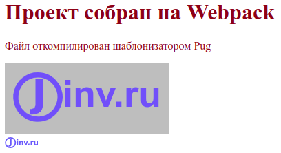
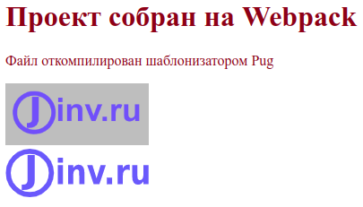
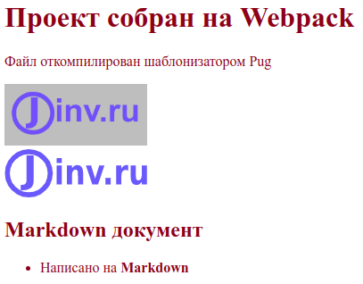
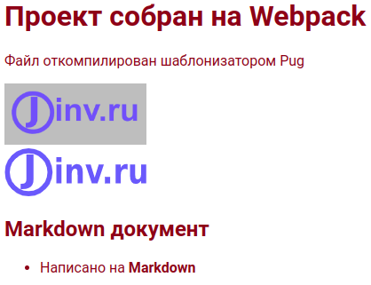
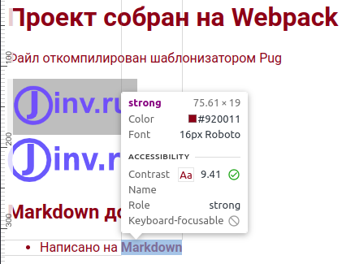

Настройка Webpack 5
О чем статья
Подробно описывается настройка сборщика Webpack 5. Слово "подробно" означает, что здесь будут, по возможности, объясняться все непонятные моменты в настройках - не только "что делать", но и "зачем это надо".
Статья покажет, как создать рабочий шаблон, с помощью которого можно разрабатывать фронтенд сайта и использовать для этого следующие инструменты: Pug, Sass, JavaScript и Markdown.
- Шаблонизатор Pug используется для разметки, которая будет автоматически преобразовываться в разметку HTML.
- Препроцессор Sass применяется для стилей, которые будут автоматически преобразовываться в стили CSS.
- Язык JavaScript необходим для создания интерактивности сайта, при этом, сборка позволит использовать последние достижения языка и не переживать, что новую функцию не распознает старый браузер.
- Разметка Markdown полезна для наполнения содержимого страниц сайта. Разметка Markdown преобразуется в понятный для браузеров HTML.
Освоив необходимый минимум можно без труда доработать созданный шаблон для работы с React или Vue, а также, интегрировать TypeScript.
Быстрый запуск Webpack
Чтобы выполнять дальнейшие действия, установите на компьютер Node.js.
Дальнейшие действия выполнялись в операционной системе Ubuntu 20.04, в которой установлена среда NodeJS v16.17.1 и менеджер пакетов NPM v8.15.0, использовался стандартный Терминал, стандартный Текстовый редактор (далее по тексту будет называться редактор) и браузер FireFox v105.0. Здесь показано, какие инструменты использовал автор, у вас инструменты могут отличаться.
Откроем терминал и создадим каталог будущего проекта:
mkdir my-project
Сделаем этот каталог рабочим:
cd my-project
Обратите внимание! С этого момента старайтесь не закрывать окно терминала, так как в нем открыт рабочий каталог проекта my-project и все дальнейшие команды в терминале выполняются в корневом каталоге проекта. Если же терминал был закрыт, то откройте новый терминал и выполните команду: cd my-project.
Теперь, если нужна система контроля версий Git, выполним два шага. Сначала в открытом терминале инициализируем Git:
git init
В корне проекта создается скрытый каталог .git, в котором хранятся необходимые файлы git-репозитория. Чтобы в файловом менеджере увидеть каталог .git нажмем комбинацию клавиш Ctrl+H.
Затем, в корне проекта создадим скрытый файл .gitignore. Для этого, в открытом терминале введем следующее:
touch .gitignore
В этом файле будем указывать имена и шаблоны для файлов и каталогов, которые не нужны в репозитории. С помощью редактора откроем файл .gitignore и запишем следующее:
node_modules
Эта запись указывает системе Git - игнорировать каталог node_modules, не отслеживать и не добавлять каталог в репозиторий.
Не забывайте сохранять в редакторе всё, что изменили. Это забывают делать не только новички, но и опытные разработчики. Так что, если после очередной правки в редакторе, у вас что-то не работает, обязательно убедитесь, что код сохранен. В дальнейшем я не буду напоминать об этом. Запомни правило: сделал правку в редакторе, нажми сочетание клавиш
Ctrl+S. Это сочетание сохраняет изменения и работает практически в любом редакторе.
С настройками Git в этом проекте закончим. Теперь, не забываем, иногда, а лучше, почаще, делать коммиты.
Теперь, инициализируем npm, для этого в терминале введем команду:
npm init -y
В корне проекта создается файл package.json с настройками по умолчанию, на что указывает опция -y. Подробно о файле package.json читайте в документации по npm.
Теперь установим webpack и webpack-cli, который используется для запуска webpack в командной строке. Для этого, в открытом терминале введем следующее:
npm i -D webpack webpack-cli
Опция -D указывает, что установленные пакеты нужны только для режима development и не будут использоваться в производственной сборке. В файле package.json эти пакеты указываются в секции "devDependencies": {...}.
В результате выполнения команды, создается каталог node_modules и файл package-lock.json. Каталог node_modules содержит зависимости проекта. Этот каталог не рекомендуется включать в репозиторий, что и указали раньше в файле .gitignore. Файл package-lock.json хранит записи о точных версиях установленных зависимостей.
С помощью открытого терминала создадим каталог src:
mkdir src
В корне проекта создается каталог src для исходного кода. В каталоге src создадим файл index.js:
touch src/index.js
Откроем файл src/index.js в редакторе и введем следующий код:
function component(text) {
const element = document.createElement('h1');
element.textContent = text;
return element;
}
document.body.prepend(component('Проект собран на Webpack'));
Затем в редакторе откроем package.json и добавим в поле "scripts" следующую строку с dev:
"scripts": {
"dev": "webpack --mode development",
"test": "echo \"Error: no test specified\" && exit 1"
}
dev - это произвольное сокращенное имя для команды webpack --mode development. Подобные скрипты в секции "scripts" файла package.json запускаются в с помощью команды npm run. Так, для запуска скрипта выше, введем в терминале следующую команду:
npm run dev
В результате, в корне проекта появится каталог dist, в который скомпилируется файл main.js. Если сравнить содержимое файла main.js с исходным src/index.js, то увидим отличия, хотя они выполняют одно и то же.
Команда npm run dev запустит webpack в режиме development. Перед началом выполнения, webpack будет искать в корне проекта файл настроек webpack.config.js. Так как, файл не создали, то применяются настройки по умолчанию. Webpack определит точку входа в каталоге src, это файл index.js, и выведет откомпилированный код в файл dist/main.js (точка выхода). Подробно об изменении настроек по умолчанию смотри в этой статье Настройка в webpack точки входа и выхода.
Теперь создадим HTML файл, который будет загружать скрипт main.js. Для этого, в терминале выполним:
touch dist/index.html
Затем откроем файл dist/index.html в редакторе и запишем следующее:
<!DOCTYPE html>
<html>
<head>
<meta charset="utf-8" />
<title>Быстрый запуск Webpack</title>
</head>
<body>
<p>Файл создан вручную</p>
<script src="main.js"></script>
</body>
</html>
Файловая структура нашего проекта выглядит так:
my-project
|-dist
index.html
main.js
|+node_modules
|-src
index.js
|+.git
package-lock.json
package.json
.gitignore
Файл dist/index.html откроем в браузере и увидим следующее:
Проект собран на Webpack
Файл создан вручную
Установка и настройка html-webpack-plugin
В примере выше, файл index.html добавляется вручную. Теперь, настроим webpack, чтобы HTML-файл автоматически создавался в готовой сборке из исходного шаблона. Для этого используем html-webpack-plugin.
Из терминала установим плагин:
npm i -D html-webpack-plugin
Теперь настроим html-webpack-plugin. Для этого создадим в корне проекта файл webpack.config.js, выполнив в терминале следующую команду:
touch webpack.config.js
Откроем файл webpack.config.js в редакторе и вставим следующий код:
const HtmlWebpackPlugin = require('html-webpack-plugin');
const path = require('path');
module.exports = {
plugins: [
new HtmlWebpackPlugin({
template: path.join(__dirname, 'src', 'template.html'),
filename: 'index.html',
}),
],
};
Для файла webpack.config.js разберем содержимое:
-
Первые две строки импортируют модули
html-webpack-pluginиpathи определяют эти модули в переменныеHtmlWebpackPluginиpathсоответственно. -
module.exports = {}- все настройки этого файла помещаются в объект, который экспортируется как модуль по умолчанию. -
Для плагина
html-webpack-pluginсоздается экземплярnew HtmlWebpackPluginс двумя заданными свойствами:template- путь к входному файлу иfilename- имя выходного файла.
В свойстве template разберем путь, который, на первый взгляд, сложен для понимания.
В Linux и macOS пути выглядят так: /path/to/template.html. В Windows пути выглядят иначе: C:\path\to\template.html. В Node.js существует модуль path, который учитывает эти различия. Модуль path подключили во второй строке файла webpack.config.js, а затем вызвали в свойстве template. Метод path.join объединяет заданные сегменты пути вместе и использует необходимый разделитель для конкретной системы. Сегменты пути для метода path.join задали тремя аргументами __dirname, 'src' и 'template.html'. Если заранее известно, что этот шаблон будет использоваться в ОС Linux, то можно вместо такого кода template: path.join(__dirname, 'src', 'template.html') указать проще - template: './src/template.html'
__dirname- глобальная константа, которая указывает абсолютный путь к каталогу файла, код которого запрашивает эту константу, т. е. в нашем случае, файл, который запрашивает__dirname- это файлwebpack.config.js, поэтому__dirnameсодержит абсолютный путь к корневому каталогу проекта.
Вместо метода path.join часто применяют метод path.resolve.
Файл настроек webpack.config.js нужен вебпаку, чтобы знать, какие плагины и с какими настройками использовать в том или ином случае. Webpack автоматически определит, если файл настроек лежит в корне проекта и называется webpack.config.js. Если имя или расположение файла настроек другое, укажите это с помощью опции --config в файле package.json, например:
"scripts": {
"serve": "webpack serve --open --mode development --config dev/serve.config.js"
}
Однако, это мы вносить в файл не будем.
Из терминала создадим файл src/template.html:
touch src/template.html
Откроем в редакторе файл src/template.html и скопируем такую разметку:
<!DOCTYPE html>
<html>
<head>
<meta charset="utf-8" />
<title>Быстрый запуск Webpack</title>
</head>
<body>
<p>Файл создан плагином html-webpack-plugin</p>
</body>
</html>
Перед тем, как запустить следующую команду, удалим каталог dist с двумя файлами. После этого, в терминале выполним следующее:
npm run dev
Каталог dist снова создан, а внутри него созданы файлы index.html и main.js. Если откроем с помощью браузера файл dist/index.html, то увидим:
Проект собран на Webpack
Файл создан плагином html-webpack-plugin
Таким образом, плагин html-webpack-plugin сделал две вещи:
- создал файл
dist/index.htmlиз файлаsrc/template.html - в файле
dist/index.htmlуказал файл скрипта <script defer src="main.js"></script>
Минимально возможный вариант сборки webpack собран и настроен. С помощью этого шаблона можно начинать разработку проекта по следующему алгоритму:
- Редактируем исходный код в файлах каталога
src - Сохраняем результат
- Выполняем сборку проекта следующей командой в терминале:
npm run dev
- Открываем в браузере файл
dist/index.html, либо если этот файл открытый, перезагружаем страницу браузера. - Смотрим на полученный результат в браузере и если надо, повторяем шаги сначала.
Установка и настройка DevServer
При разработке проекта нужно каждый раз запускать в терминале команду npm run dev и вручную обновлять страницу браузера. Для уменьшения количества рутинных операций, автоматизируем процесс.
В webpack доступно три способа, которые позволяют при сохранении кода автоматически его компилировать:
Здесь рассмотрим вариант с веб сервером. С помощью терминала установим webpack-dev-server:
npm i -D webpack-dev-server
В редакторе откроем файл webpack.config.js и добавим настройки для веб-сервера (указано знаками +):
const HtmlWebpackPlugin = require('html-webpack-plugin');
const path = require('path');
module.exports = {
plugins: [
new HtmlWebpackPlugin({
template: path.join(__dirname, 'src', 'template.html'),
filename: 'index.html',
}),
],
+ devServer: {
+ watchFiles: path.join(__dirname, 'src'),
+ port: 9000,
+ },
};
Для devServer указали два свойства:
watchFilesуказывает на каталогsrc, за которыми будет вестись наблюдение и в случае, если в каталоге произойдут изменения, веб сервер автоматически сделает сборку проекта и перезагрузит страницу браузера.portуказывает порт на котором будет работать веб-сервер, по умолчанию - localhost:8080.
Чтобы запускать веб сервер короткой командой создадим для CLI скрипт "serve" в файле package.json:
{
"scripts": {
+ "serve": "webpack serve --open --mode development",
"dev": "webpack --mode development",
"test": "echo \"Error: no test specified\" && exit 1"
}
}
serve означает запустить веб сервер. --open автоматически запускает браузер. --mode development включает режим разработки.
Перед тем как запустить веб-сервер удалим каталог dist. Это делать необязательно, а нужно для понимания работы веб-сервера.
В терминале запустим веб-сервер командой:
npm run serve
В результате, автоматически откроется страница браузера по адресу http://localhost:9000/ и мы увидим тоже, что и в прошлый раз:
Проект собран на Webpack
Файл создан плагином html-webpack-plugin
Если по какой-то причине, страница браузера автоматически не откроется, то откройте браузер вручную и перейдите по адресу http://localhost:9000
В проекте отсутствует каталог dist. Тогда откуда браузер берет данные? DevServer компилирует исходный код, и записывает файлы в оперативную память.
Теперь файловая структура нашего проекта будет выглядеть так:
my-project
|-node_modules
|-src
index.js
template.html
|+.git
package-lock.json
package.json
webpack.config.js
.gitignore
Веб-сервер можно остановить, если в терминале нажать сочетание клавиш Ctrl+C.
Настройка в Webpack точки входа и выхода
В Webpack'е с четвертой версии не требуется задавать точки входа и выхода, а допускается использовать настройки по умолчанию:
- точка входа -
./src/index.js - точка выхода -
./dest/main.js.
Это упрощает настройки, когда проект несложный, но если проект расширяет функциональность, то без настроек точек входа и выхода не обойтись.
Точка входа
Точка входа - файл, который Webpack компилирует первым и если в этом файле подключаются зависимости, то эти зависимости тоже обрабатываются.
С помощью настроек, укажем, использовать точку входа. Для этого в файл webpack.config.js добавим свойство entry:
module.exports = {
entry: path.join(__dirname, 'src', 'index.js'),
};
Теперь, чтобы изменить точку входа изменяем значение свойства entry. Также, можно задать несколько точек входа. Это нужно при разделении кода на части. Подробно о настройках точки входа читайте в статьях Entry Points и Entry and Context.
Точка выхода
Точка выхода - каталог, в который Webpack компилирует точки входа.
Точка выхода настраивается в файле webpack.config.js с помощью свойства output:
module.exports = {
output: {
path: path.join(__dirname, 'dist'),
filename: 'index.[contenthash].js',
},
};
где:
[contenthash]- шаблон, в который подставляется хеш, сгенерированный на основе содержимого файла. Хеширование меняет имя после каждого изменения содержимого файла. Это решает проблему версионирования. Если хеш изменился, то браузер берет не старый файл из кеша, а загружает новый с сервера. 20 знаков хеша сократить до нужного количества символов можно следующим образом: [contenthash:8]. Хеш будет длиной 8 символов. Подробно о шаблоне хешей читайте в статье Hash vs chunkhash vs ContentHash.
Подробно о точках выхода описывается в статьях concepts/output и configuration/output.
Теперь файл webpack.config.js выглядит так:
const HtmlWebpackPlugin = require('html-webpack-plugin');
const path = require('path');
module.exports = {
entry: path.join(__dirname, 'src', 'index.js'),
output: {
path: path.join(__dirname, 'dist'),
filename: 'index.[contenthash].js',
},
plugins: [
new HtmlWebpackPlugin({
template: path.join(__dirname, 'src', 'template.html'),
filename: 'index.html',
}),
],
devServer: {
watchFiles: path.join(__dirname, 'src'),
port: 9000,
},
};
В терминале остановим сервер клавишами Ctrl+C и запустим следующую команду:
npm run dev
В корне проекта появится каталог dist, в котором будут два файла: index.html и index.[hash].js. Второй файл раньше назывался main.js. Код в имени файла - хеш, который будет меняться с изменением содержимого файла.
Автоматическая очистка каталогов
Перед каждым запуском вебпака полезно очищать каталог dist. Это предотвратит накапливание ненужных файлов. Для этого применим filemanager-webpack-plugin.
Для начала, установим filemanager-webpack-plugin:
npm i -D filemanager-webpack-plugin
Затем, в файле webpack.config.js добавим:
const HtmlWebpackPlugin = require('html-webpack-plugin');
const path = require('path');
+ const FileManagerPlugin = require('filemanager-webpack-plugin');
module.exports = {
...
plugins: [
new HtmlWebpackPlugin({
...
}),
+ new FileManagerPlugin({
+ events: {
+ onStart: {
+ delete: ['dist'],
+ },
+ },
+ }),
],
devServer: {
...
},
};
Каталог dist, если быть точным, не очищается, а удаляется. Плагин filemanager-webpack-plugin может также копировать, создавать, перемещать, архивировать файлы и каталоги перед началом сборки onStart и по окончании onEnd. В дальнейшем, воспользуемся плагином для копирования файлов.
Проверим работу пакета filemanager-webpack-plugin, для этого в терминале запустим веб-сервер командой:
npm run serve
В результате, автоматически откроется страница браузера по адресу http://localhost:9000/ и мы увидим тоже, что и в прошлый раз:
Проект собран на Webpack
Файл создан плагином html-webpack-plugin
Если же проверим корневой каталог проекта, то не увидим каталога dist, что говорит, о правильной работе пакета filemanager-webpack-plugin.
Остановим DevServer, для этого в терминале нажмем Ctrl+C.
Настройка режима production в webpack
До сих пор webpack использовался в режиме разработки. Теперь создадим производственную сборку, чтобы получить готовое приложение, которое размещается на удаленном сервере.
В файле package.json добавим скрипт "build":
"scripts": {
"serve": "webpack serve --open --mode development",
"dev": "webpack --mode development",
+ "build": "webpack --mode production",
"test": "echo \"Error: no test specified\" && exit 1"
},
Сначала, в терминале выполним команду:
npm run dev
Oткроем файл dist/index.[hash].js в редакторе и посмотрим на него. Видим кучу комментариев, а код представлен в не сжатом виде. Размер файла составляет 1418 байт.
Запустим в терминале webpack в режиме production:
npm run build
Посмотрим на содержимое файла dist/index.[hash].js, в котором увидим, что отсутствуют комментарии, а код сжатый. Размер файла составляет 139 байт. Этим режим production отличается от режима development - код конечного бандла сжимается. То же относится и к файлу index.html, который в режиме development не сжимается и размер файла составляет 282 байта, а в режиме production убираются пробелы и ненужные символы и размер файла становится равен 259 байт.
Babel
Большинство новых браузеров поддерживают все новые возможности JavaScript ES6-ES13. Но, многие из этих возможностей не поддерживаются старыми браузерами, которые до сих пор используются в мире. Поэтому, если важно сохранять поддержку этих браузеров, то самый распространенный способ - применить Babel. Babel - это компилятор, который адаптирует неподдерживаемые функции JavaScript для устаревших браузеров.
Чтобы посмотреть, какие браузеры поддерживают ту или иную функцию воспользуемся сервисом Can I use. Если в строке
Can I use______?ввестиes13, то будет выведен список функций, которые ожидаются в 13-ом выпуске ECMAScript. При выборе функции, показывается таблица с браузерами, которые поддерживают или не поддерживают эту функцию.
Babel позволяет писать код с использованием новых возможностей JavaScript ES6-ES13. При этом можно не заботится о том, что функция не будет поддерживаться старым браузером. Babel транспилирует JavaScript код в ES5, а браузеры, которые не поддерживают этот стандарт уже никем не используются.
Для работы Babel требуется два пакета @babel/core и @babel/preset-env, а чтобы Babel работал с Webpack требуется загрузчик babel-loader. Установим эти три пакета одной командой:
npm i -D @babel/core @babel/preset-env babel-loader
Конфигурацию для Babel зададим в файле .babelrc. Из терминала в корне проекта создадим этот файл:
touch .babelrc
Откроем .babelrc и внесем следующий код:
{
"presets": [
[
"@babel/preset-env",
{
"modules": false
}
]
]
}
Теперь, откроем файл webpack.config.js и добавим настройки для Babel:
module.exports = {
entry: path.join(__dirname, 'src', 'index.js'),
output: {
...
},
+ module: {
+ rules: [
+ {
+ test: /\.js$/,
+ use: 'babel-loader',
+ exclude: /node_modules/,
+ },
+ ],
+ },
plugins: [
...
],
devServer: {
...
},
};
Мы создали объект module, для которого задали правило rules. Для вебпака файл - это модуль, будь то скрипт, стили, шрифт или изображение. Здесь, для всех модулей (читай, файлов) с расширением .js webpack будет применять плагин babel-loader. Правило не действует на каталог node_modules, что указывается в свойстве module.rules.exclude.
Перед тем, как запустить сборку, откроем файл dist/index.[hash].js и посмотрим на код, который выглядит так:
document.body.append((function(e){constt=document.createElement('h1');return(t.textContent='Проект собран на Webpack'),t;})());
В терминале запустим команду:
npm run build
Теперь, откроем файл dist/index.[hash].js и посмотрим на код, который выглядит так:
(()=>{var e;document.body.append(("Проект собран на Webpack",(e=document.createElement("h1")).textContent="Проект собран на Webpack",e))})();
Исходный код мы не меняли, но код конечного бандла изменился. Это результат действия компилятора Babel. Второй код поймут все браузеры, которые поддерживают ES5 и выше.
Подключение шаблонизатора Pug
На чистом HTML верстать можно, но трудно поддерживать большие проекты. Поэтому, умные люди придумали инструменты, которые называются шаблонизаторами.
Шаблонизаторы позволяют:
- создавать шаблоны, компоненты, блоки
- работать с данными, подставляя эти данные в код. Шаблонизатор может автоматически создать карточки, если подставить данные в компонент из объекта JSON. Также, можно менять классы, если изменять данные, что позволяет управлять интерфейсом компонентов.
- задавать условные выражения и циклы, как в языках программирования.
В этой статье рассмотрим шаблонизатор Pug, который написан на JavaScript и выполняется в среде Node.js. Шаблонизатор Pug использует синтаксис, основанный на отступах и отличается от синтаксиса HTML отсутствием угловых скобок и закрывающихся тегов. После компиляции синтаксис Pug превращается в HTML код.
Чтобы шаблонизатор Pug работал с Webpack имеется плагин и загрузчик файлов pug-loader.
Загрузчик pug-loader не поддерживает Pug 3-ей версии, поэтому придется довольствоваться второй версией. Кому очень нужен Pug 3, предлагаю два варианта решения:
- Сравнительно недавно появился pug-plugin, который работает с Webpack 5 и Pug 3.
- Самостоятельно настроить pug-loader для третьей версии Pug, и дождаться, пока разработчики плагина сами это сделают. Это способ, которым пользуется автор этой статьи, об этом способе читайте в статье Как заставить работать вместе Pug 3, pug-loader и Webpack 5.
Установим pug и pug-loader
npm i -D pug pug-loader
Вебпаку укажем, что используем плагин pug-plugin для файлов с расширением .pug. Для этого в файле webpack.config.js добавим:
module.exports = {
entry: path.join(__dirname, 'src', 'index.js'),
output: {
...
},
module: {
rules: [
{
test: /\.js$/,
use: 'babel-loader',
exclude: /node_modules/,
},
+ {
+ test: /\.pug$/,
+ loader: 'pug-loader',
+ },
],
},
plugins: [
new HtmlWebpackPlugin({
+ template: path.join(__dirname, 'src', 'template.pug'),
filename: 'index.html',
}),
new FileManagerPlugin({
...
}),
],
devServer: {
...
},
};
Теперь, благодаря pug-loader модуль HtmlWebpackPlugin может работать с файлами .pug.
Из терминала создадим файл src/template.pug:
touch src/template.pug
и напишем в нем следующее:
doctype html
html(lang= 'ru')
head
meta(charset='utf-8')
title= 'Быстрый запуск Webpack'
body
p Файл откомпилирован шаблонизатором Pug
Для шаблонизатора Pug очень важны отступы в коде, поэтому обращайте на них внимание
Файл src/template.html теперь удалим.
В терминале запустим команду:
npm run serve
Откроется страница браузера по адресу http://localhost:9000/, на которой увидим:
Проект собран на Webpack
Файл откомпилирован шаблонизатором Pug
Из этого следует, что шаблонизатор Pug работает правильно.
Остановим DevServer, для этого в терминале нажмем Ctrl+C.
Загрузка стилей в webpack
Для написания стилей будем использовать препроцессор Sass, который расширяет возможности CSS и упрощает создание CSS-кода, а также преобразует SCSS в CSS. Затем, будем прогонять этот CSS через постпроцессор PostCSS, чтобы большинство браузеров понимало эти стили.
Установим необходимые пакеты:
npm i -D sass-loader postcss-loader postcss-preset-env css-loader style-loader sass
где:
- sass-loader - загрузчик файлов Sass/SCSS
- sass компилятор файлов
.scssв.css. - postcss-loader - загрузчик CSS файлов для пост-обработки. Должен работать с каким нибудь плагином.
- postcss-preset-env - плагин для PostCSS, который конвертирует современный CSS в код, понятный большинству браузеров, включением необходимых полифилов.
- css-loader загрузчик CSS-файлов
- style-loader загрузчик стилей в DOM
Если требуется использовать только CSS и не пользоваться преимуществами SCSS и PostCSS, то установите только
css-loaderиstyle-loader.
Создадим файл src/main.scss:
touch src/main.scss
и внесем в него следующее:
$font-size: 1rem;
$font-color: lch(28 99 35);
html {
font-size: $font-size;
color: $font-color;
}
В файле используются переменные Sass и LCH цвета, которые поддерживаются не всеми браузерами, но PostCSS транспилирует эти цвета в понятные любому браузеру.
В файле src/index.js сделаем импорт файла main.scss:
import './main.scss';
Такой импорт стилей в скрипте не поддерживается языком JavaScript, а возможен благодаря webpack.
В webpack.config.js настроим пакеты:
...
module.exports = {
entry: ... ,
output: {
...
},
module: {
rules: [
{
...
},
{
test: /\.pug$/,
loader: 'pug-loader',
},
+ {
+ test: /\.(scss|css)$/,
+ use: ['style-loader', 'css-loader', 'postcss-loader', 'sass-loader'],
+ },
],
},
plugins: [
...
],
devServer: {
...
},
};
Указываем вебпаку, какие загрузчики стилей применять. Причем, порядок их перечисления в массиве важен, так как загрузчики используются вебпаком от последнего к первому:
-
Так что последним в списке должен быть sass-loader, который загружает файлы SCSS и компилирует его в CSS.
-
Затем идет postcss-loader, который с помощью PostCSS транспилирует самые современные фичи CSS (переменные, миксины и многое другое) в то, что понятно большинству браузеров. Также, PostCSS применяет автопрефиксер и линтер к CSS.
-
Следующим идет css-loader, который интерпретирует @import и url() внутри CSS.
-
Последним будет style-loader, который внедряет CSS в DOM
Настройки для PostCSS можно задавать как в файле webpack.config.js так и в собственном файле настроек postcss.config.js. Воспользуемся вторым способом.
Создадим в корне проекта файл postcss.config.js
touch postcss.config.js
и запишем в файле следующий код:
module.exports = {
plugins: {
'postcss-preset-env': {
browsers: 'last 2 versions',
},
},
};
В терминале запустим команду:
npm run serve
Откроется браузер и появится цветной текст.
Проект собран на Webpack
Файл откомпилирован шаблонизатором Pug
Теперь остановим сервер сочетанием клавиш Ctrl+C и введем в терминале команду:
npm run build
Если заглянем в каталог dist, то не обнаружим файла с расширением .css. Это связано с тем, что стили находятся в бандле dist/index.[hash].js.
Можем извлечь стили в отдельный файл, что позволит раздельно кэшировать JS и CSS, для этого применим плагин mini-css-extract-plugin. Плагин создает CSS-файл из каждого JS-файла, в котором содержится CSS. Сначала установим mini-css-extract-plugin:
npm i -D mini-css-extract-plugin
Затем настроим его в файле webpack.config.js:
const HtmlWebpackPlugin = require('html-webpack-plugin');
const path = require('path');
const FileManagerPlugin = require('filemanager-webpack-plugin');
+ const MiniCssExtractPlugin = require('mini-css-extract-plugin');
module.exports = {
entry: path.join(__dirname, 'src', 'index.js'),
output: {
...
},
module: {
rules: [
... ,
{
test: /\.(scss|css)$/,
use: [
+ MiniCssExtractPlugin.loader,
'css-loader',
'postcss-loader',
'sass-loader',
],
},
],
},
plugins: [
new HtmlWebpackPlugin({
...
}),
new FileManagerPlugin({
...
}),
+ new MiniCssExtractPlugin({
+ filename: '[name].[contenthash].css',
+ }),
],
devServer: {
...
},
};
Вместо 'style-loader' используем MiniCssExtractPlugin.loader.
Проверим работу плагина, для этого в терминале запустим:
npm run build
В каталоге dist появится файл main.[hash].css.
Загрузка изображений в webpack
Здесь настроим webpack для работы с изображениями в формате PNG, JPG, GIF и SVG. До webpack 5 для работы с изображениями использовались загрузчики raw-loader, url-loader и file-loader. Начиная с webpack 5, вместо загрузчиков изображений, значков, шрифтов и т. д. используется встроенный Asset Modules.
Для поддержки изображений устанавливать ничего не нужно, требуется только настроить webpack.config.js:
module.exports = {
entry: path.join(__dirname, 'src', 'index.js'),
output: {
path: path.join(__dirname, 'dist'),
filename: 'index.[contenthash].js',
+ assetModuleFilename: path.join('images', '[name].[contenthash][ext]'),
},
module: {
rules: [
...
{
test: /\.(scss|css)$/,
use: [MiniCssExtractPlugin.loader, 'css-loader', 'postcss-loader', 'sass-loader'],
},
+ {
+ test: /\.(png|jpg|jpeg|gif)$/i,
+ type: 'asset/resource',
+ },
+ {
+ test: /\.svg$/,
+ type: 'asset/resource',
+ generator: {
+ filename: path.join('icons', '[name].[contenthash][ext]'),
+ },
+ },
],
},
plugins: [
...
],
devServer: {
...
},
};
-
assetModuleFilename- указывает выходной каталогimagesи шаблон имени[name].[contenthash][ext]для файлов, которые соответствуют правилуtype: 'asset/resource'. ЕслиassetModuleFilenameне указан, то, по умолчанию, каталогом будетdist, а имя файла будет[contenthash][ext]. -
[ext]- шаблон для расширения файла, также, включает точку. -
generator.filename- переопределяетassetModuleFilenameдля конкретного asset-правила. Здесь, svg-файлы будут выводиться в каталогdist/icons -
typeимеет четыре типа asset:-
asset/resource- работает так же, как и загрузчик file-loader. Модули, которые соответствуют правилуtype: 'asset/resource'будут выводится в указанный с помощьюassetModuleFilenameкаталог. -
asset/inlineработает как загрузчик url-loader. Модули, соответствующие правилуtype: 'asset/inline', встраиваются в код бандла как Data URL. -
asset/sourceпохож на работу загрузчика raw-loader. Модули, соответствующие правилуtype: 'asset/source', встраиваются без преобразований (как есть). -
assetобъединяетasset/resourceиasset/inline. Он работает следующим образом: если размер модуля больше 8 КБ, то он работает какasset/resource, в противном случае - какasset/inline. Размер 8 КБ задан по умолчанию, но его можно изменить с помощью свойства parser.dataUrlCondition.maxSize.
-
Создадим каталог src/images и поместим в него растровое изображения с именем image.png и векторное - logo.svg.
Могу предложить свои рисунки. Перейдем по этой ссылке, наведем курсор на рисунок, нажмем правую кнопку мыши, выберем из контекстного меню "Сохранить изображение как...", выберем каталог
src/imagesнашего проекта, нажмем кнопку сохранить. Тоже самое проделаем для векторного изображения.
{kind=link}
{kind=link}
Откроем файл src/template.pug и допишем в него классы .logo-png, .logo-svg и теги img:
doctype html
html(lang= 'ru')
head
meta(charset='utf-8')
title= 'Быстрый запуск Webpack'
body
p Файл откомпилирован шаблонизатором Pug
.logo-png
img.logo1(src=require('./images/image.png') alt='Загрузка PNG изображений с помощью Webpack')
.logo-svg
img.logo2(src=require('./images/logo.svg'), alt='Загрузка SVG изображений с помощью Webpack')
В атрибуте src используется require, т. е. изображение запрашивается как модуль.
В терминале запустим команду:
npm run serve
В окне браузера появилось два рисунка:

Размер изображения изменим через стили. Для этого откроем файл src/main.scss и зададим размеры для обоих изображений, для этого добавим в конец файла следующее:
.logo1 {
width: 10em;
}
.logo2 {
width: 10em;
}
Сохраним изменения и увидим, что размер изображений стал одинаковым. При этом, мы изменили только ширину, а высота изменилась пропорционально.

Оптимизация изображений
Многие изображения сжимаются без ухудшения визуального качества. Сжатие дает выигрыш в скорости загрузки изображений с сервера сайта в браузер пользователя. Для сжатия существуют инструменты оптимизации изображений.
Векторные изображения, к которым относится формат SVG, можно неограниченно масштабировать без потери качества. SVG - текстовый язык разметки, а SVG-файлы редактируются при помощи текстовых или векторных графических редакторов. Если в SVG-изображении не сильно много мелких деталей, то SVG-файлы получаются меньше по размеру, чем сравнимые по качеству изображения в форматах JPEG или GIF. SVG-файлы хорошо сжимаются. SVG применяется во фронтенде и для него придумано много инструментов. Одним из таких инструментов является минификатор svgo, который удаляет лишний код в разметке SVG и тем самым уменьшает размер файла.
Установим svgo:
npm i -D svgo
Теперь, чтобы заработало сжатие для SVG файлов, настроим совместную работу svgo и imagemin с помощью плагина imagemin-svgo.
Для оптимизации растровых изображений применяется минификатор imagemin. Для webpack существует image-minimizer-webpack-plugin - это загрузчик и плагин для оптимизации изображений с помощью imagemin.
Сначала, установим плагин image-minimizer-webpack-plugin и минификатор imagemin:
npm i -D image-minimizer-webpack-plugin imagemin
Затем, для оптимизации изображений без потерь качества, установим следующие плагины:
npm i -D imagemin-gifsicle imagemin-jpegtran imagemin-optipng imagemin-svgo
В файл webpack.config.js добавим настройки:
...
+ const ImageMinimizerPlugin = require('image-minimizer-webpack-plugin');
module.exports = {
entry: path.join(__dirname, 'src', 'index.js'),
output: {
...
},
module: {
rules: [
...
],
},
plugins: [
...
],
devServer: {
...
},
+ optimization: {
+ minimizer: [
+ new ImageMinimizerPlugin({
+ minimizer: {
+ implementation: ImageMinimizerPlugin.imageminMinify,
+ options: {
+ plugins: [
+ ['gifsicle', { interlaced: true }],
+ ['jpegtran', { progressive: true }],
+ ['optipng', { optimizationLevel: 5 }],
+ ['svgo', { name: 'preset-default' }],
+ ],
+ },
+ },
+ }),
+ ],
+ },
};
Для svgo параметры оптимизации установлены по умолчанию { name: 'preset-default' }. Подробно о настройках оптимизации svgo читайте здесь.
В терминале запустим команду:
npm run build
Сравним размеры файлов изображений в каталоге src и dist. Файл image.png был 4,9 КБ, а стал 2,3 КБ, файл logo.svg был 11,4 КБ, а стал 2,5 КБ. Мы видим, заметное сжатие изображений.
Включение синтаксиса Markdown и файлов .md в Pug
Pug является удобным инструментом для замены HTML при написании разметки. Но если необходимо в разметку вставлять большие объемы текста, например, как в статье, которую вы сейчас читаете, то ни Pug, ни HTML не удобны для этого. Для написания текстов придумали разметку Markdown, которая удобна для чтения и написания текстов, и которая в итоге будет преобразована в HTML.
Сравните текст, написанный на Markdown
## Markdown документ
- Написано на **Markdown**
с текстом, написанном на Pug:
h2 Markdown документ
ul
li Написано на
b Markdown
и с текстом, написанном на HTML:
<h2>Markdown документ</h2>
<ul>
<li>Написано на <b>Markdown</b></li>
</ul>
По умолчанию шаблонизатор Pug понимает только свою разметку и разметку HTML. Чтобы в шаблонизаторе Pug использовать Markdown, применим фильтр :markdown-it модуля jstransformer-markdown-it.
Фильтры позволяют использовать в шаблонизаторе Pug другие языки.
Для начала установим модуль jstransformer-markdown-it:
npm i -D jstransformer-markdown-it
Теперь можем в Pug-файле использовать синтаксис Markdown. Откроем файл src/template.pug и добавим в конец файла три строки кода:
doctype html
html(lang= 'ru')
head
meta(charset='utf-8')
title= 'Быстрый запуск Webpack'
body
p Файл откомпилирован шаблонизатором Pug
.logo-png
img.logo1(src=require('./images/image.png') alt='Загрузка PNG изображений с помощью Webpack')
.logo-svg
img.logo2(src=require('./images/logo.svg'), alt='Загрузка SVG изображений с помощью Webpack')
:markdown-it(linkify langPrefix='highlight-')
## Markdown документ
- Написано на **Markdown**
Сохраним файл и из терминала выполним команду:
npm run serve
В браузере мы видим после изображений две строки текста, написанные с помощью Markdown. Это заголовок второго уровня и строка немаркированного списка со словом, которое выделено жирным шрифтом .

Чтобы не загрязнять код текстом, можно поместить markdown разметку в файл с расширением .md и включить этот файл в pug-шаблон, используя include:markdown-it, например:
doctype html
html(lang= 'ru')
head
meta(charset='utf-8')
title= 'Быстрый запуск Webpack'
body
p Файл откомпилирован шаблонизатором Pug
.logo-png
img.logo1(src=require('./images/image.png') alt='Загрузка PNG изображений с помощью Webpack')
.logo-svg
img.logo2(src=require('./images/logo.svg'), alt='Загрузка SVG изображений с помощью Webpack')
include:markdown-it content/article.md
Подключение шрифтов
Если мы хотим, чтобы во всех браузерах и на всех устройствах наш сайт отображал именно те шрифты, которые указаны, нужно эти шрифты поместить на сервер сайта и указать браузерам использовать эти шрифты. Тогда все браузеры будут скачивать эти шрифты и применять для отображения страниц вашего сайта. Если этого не сделать, то каждый браузер будет использовать подходящие шрифты, если не найдет указанных. Это может сказаться на дизайне всего сайта.
Шрифты нашего проекта поместим в каталоге src/fonts. Создадим этот каталог:
mkdir src/fonts
Затем, создадим в этом каталоге файл fonts.scss
touch src/fonts/fonts.scss
в котором будем хранить CSS стили для шрифтов. Пропишем файл fonts.scss в src/index.js:
import './main.scss';
+ import './fonts/fonts.scss';
function component(text) {
const element = document.createElement('h1');
element.textContent = text;
return element;
}
document.body.prepend(component('Проект собран на Webpack'));
Теперь, скачаем нужные шрифты и код CSS для них.
- На странице google-webfonts-helper в списке слева нужно выбрать необходимый шрифт.
- Справа от списка появится страница для шрифта. На этой странице можно дополнительно указать нужные кодировки и стили, которые планируется использовать для шрифта.
- В секции
Select charsetsвыберемcyrillicиlatin. - В секции
Select stylesвыберемregular,italic,700и700italic - В секции
Copy CSS:в полеCustomize folder prefix (optional):укажите префикс пути./и скопируйте из серого поля CSS-код в файлsrc/fonts/fonts.scss.
- Нажмите на синюю кнопку в секции
Download filesи скачайте файл с расширением.zip. - Распакуйте из zip-архива файлы шрифтов в каталог
src/fonts/.
Рекомендуется оптимизировать шрифты на таких сервисах как Font2web или Transfonter, но шрифты Google уже оптимизированы, поэтому этот шаг можно пропустить.
Для обработки шрифтов вебпаком добавим следующие правила в файл webpack.config.js:
module: {
rules: [
+ {
+ test: /\.(woff2?|eot|ttf|otf)$/i,
+ type: 'asset/resource',
+ },
],
},
В файле main.scss укажем на используемый шрифт. Так, если это будет шрифт Roboto и мы хотим его использовать по всему нашему проекту, то запишем:
html {
font-family: 'Roboto';
}
В терминале выполним команду:
npm run serve
Откроется браузер и мы увидим, что весь шрифт теперь без засечек.

Проверить применяемый шрифт для элемента можно с помощью инструментов разработчика. Чтобы быстро открыть инструменты разработчика, нажмем в окне браузера Ctrl+Shift+I, и включим режим выбора элементов сочетанием клавиш Ctrl+Shift+C. Если у вас браузер Chrome или Yandex, то наведите курсором на любой текст на странице. В контекстной подсказке будет показан применяемый шрифт:

Если у вас браузер Firefox, то применяемые шрифты нужно искать в Инспекторе в секции для CSS-кода.
Копирование файлов и каталогов
Часто возникает необходимость скопировать в готовую сборку некоторые файлы или каталоги без преобразований. Это могут быть файлы PDF, либо файл robots.txt, который используется для ограничения доступа поисковым роботам к ресурсам сайта, файлы favicon.ico, sitemap.xml и т.п. В исходном коде такие ресурсы, обычно, помещают в каталог static, а из него эти ресурсы при сборке копируются в корень каталога dist.
Создадим каталог src/static:
mkdir src/static
Создадим файл src/static/robots.txt:
touch src/static/robots.txt
Как заполнять файл robots.txt можно узнать в статье Использование файла robots.txt, а пока оставим его пустым.
В параграфе Автоматическая очистка каталогов применялся плагин filemanager-webpack-plugin, который может удалять, копировать, создавать, перемещать и архивировать файлы и каталоги. Применим этот плагин для копирования ресурсов. Так как плагин в проекте уже установлен, то остается его настроить для копирования. Добавим в файл webpack.config.js следующий код, отмеченный знаками +:
* const FileManagerPlugin = require('filemanager-webpack-plugin');
module.exports = {
plugins: [
... ,
* new FileManagerPlugin({
* events: {
* onStart: {
* delete: ['dist'],
* },
+ onEnd: {
+ copy: [
+ {
+ source: path.join('src', 'static', 'robots.txt'),
+ destination: path.join('dist', 'robots.txt'),
+ },
+ ],
* },
* },
* }),
... ,
],
};
Звездочками * отмечены строки, которые для этого плагина были настроены раньше в параграфе Автоматическая очистка каталогов, а знаком + отмечены строки, которые добавлены сейчас.
В терминале выполним команду:
npm run build
В каталоге dist появился файл robots.txt.
Полезные ресурсы для настройки webpack
Настройка Webpack заставляет постоянно редактировать файл webpack.config.js. Поэтому, полезно держать под рукой справочник. Официальный сайт Webpack'а предлагает такой справочник, который представляет файл конфигурации с интерактивными опциями, если нажать на название непонятной опции, откроется страница с подробной документацией.
Рекомендую посетить сервис createapp.dev, который поможет создать готовый шаблон проекта с необходимыми настройками. Этот сервис настраивает проект под Webpack, Parcel и Snowpack и полезен для опытных пользователей.
Заключение
В этой статье показано, как настроить webpack для создания фронтенда сайта с использованием шаблонизатора Pug, препроцессора SCSS, языка разметки Markdown и языка JavaScript. Показываются методы оптимизации изображений, подключения шрифтов, настройки локального сервера.
Весь код из этой статьи находится здесь.
За рамками этой статьи остались настройка вебпака для работы с библиотекой React или фреймворком Vue, а также интеграция с TypeScript. Не рассмотрена такая тема, как разделение кода на чанки. Если после очередной сборки бандла вы замечаете, что загрузка сайта начинает ощутимо возрастать, то стоит рассмотреть такие методы, как Code Splitting, Lazy Loading и Tree Shaking.